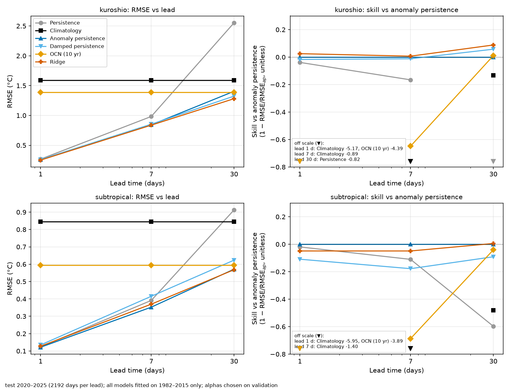

Mukhammaddiyor Abdulazimov · Harbin Engineering University · November 2026
Question. How hard are simple baselines to beat for 1-, 7- and 30-day SST forecasts, and does a per-grid-point Ridge regression help? This is a baselines study, not an ocean forecasting model.
Data. NOAA OISST v2.1 daily 0.25° SST, two 40x40-point boxes (Kuroshio extension, per-point anomaly std 1.13 °C; subtropical, 0.69 °C), 1982-01-01–2025-12-31 (16,071 days). ERDDAP is the primary source; 1,194 days it lacks were filled from NOAA PSL after checks (double fetch, range, step, exact match on overlaps: max |difference| 3.8e-06 °C).
Protocol. Training 1982–2015 (climatology: 3 harmonics; Ridge fit), validation 2016–2019 (Ridge alpha), test 2020–2025 (2192 days per lead) evaluated once after a frozen, tagged configuration. Score: cos(lat)-weighted RMSE; skill = 1 − RMSE/RMSE of anomaly persistence.
Baselines. persistence; climatology; anomaly persistence; damped persistence (training-year lag correlation); OCN (mean of the same day over the previous 10 years); Ridge (anomaly lags 0–6 and 30-day mean anomaly, one model per grid point and lead).
Test results: RMSE in °C (skill vs anomaly persistence).
| Method | Kuroshio 1 d | Kuroshio 7 d | Kuroshio 30 d | Subtropical 1 d | Subtropical 7 d | Subtropical 30 d |
|---|---|---|---|---|---|---|
| Persistence | 0.268 (-0.039) | 0.983 (-0.166) | 2.554 (-0.817) | 0.124 (-0.019) | 0.391 (-0.110) | 0.913 (-0.597) |
| Climatology | 1.591 (-5.174) | 1.591 (-0.886) | 1.591 (-0.132) | 0.846 (-5.955) | 0.846 (-1.399) | 0.846 (-0.480) |
| Anomaly persistence | 0.258 (+0.000) | 0.843 (+0.000) | 1.405 (+0.000) | 0.122 (+0.000) | 0.353 (+0.000) | 0.571 (+0.000) |
| Damped persistence | 0.262 (-0.017) | 0.854 (-0.012) | 1.324 (+0.058) | 0.135 (-0.109) | 0.415 (-0.178) | 0.623 (-0.091) |
| OCN (10 yr) | 1.390 (-4.394) | 1.390 (-0.648) | 1.390 (+0.011) | 0.595 (-3.890) | 0.595 (-0.687) | 0.595 (-0.041) |
| Ridge | 0.251 (+0.025) | 0.838 (+0.007) | 1.281 (+0.088) | 0.128 (-0.049) | 0.370 (-0.049) | 0.568 (+0.006) |

Key findings.
LSTM (added after the baselines). Same inputs as Ridge (30 days of anomaly at one grid point); one LSTM per region, 3 seeds, protocol tagged before the test and run once. RMSE in °C (skill vs Ridge, mean ± std over seeds; validation in brackets).
| LSTM | Kuroshio 1 d | Kuroshio 7 d | Kuroshio 30 d | Subtropical 1 d | Subtropical 7 d | Subtropical 30 d |
|---|---|---|---|---|---|---|
| RMSE (skill vs Ridge) | 0.266 (-0.061) [-0.001] | 0.852 (-0.017) [+0.006] | 1.283 (-0.001) [+0.014] | 0.124 (+0.029) [-0.006] | 0.361 (+0.025) [+0.026] | 0.556 (+0.022) [+0.045] |
Result (test, H = 64, mean ± std over seeds 0, 1, 2). The LSTM does not beat Ridge in the Kuroshio box (skill vs Ridge -0.061, -0.017, -0.001 at 1, 7, 30 d; on validation it had been -0.001, +0.006, +0.014, so the 7- and 30-day gains did not hold). In the subtropical box it beats Ridge at every lead (skill +0.029, +0.025, +0.022; validation -0.006, +0.026, +0.045), but Ridge itself is worse than anomaly persistence at 1 and 7 days there, and the LSTM does not beat anomaly persistence at those leads either (skill vs anomaly persistence -0.018, -0.023, +0.027; Kuroshio -0.034, -0.010, +0.087). At 30 days the LSTM is better than anomaly persistence in both boxes. ACC at 30 d is slightly lower than that of anomaly persistence in both boxes.
Fairness caveat. The LSTM gets the full 30-day sequence plus sin/cos of the day of year; Ridge gets lags 0–6 and the 30-day mean and no day of year, so part of any LSTM gain may come from the extra inputs, not from the nonlinear model (not tested). Validation and test used slightly different pair conventions (see the protocol). This is a learning experiment, not an ocean forecasting model, and the Kuroshio and subtropical results disagree, so no general claim is made.
B1: spatial context (added after the LSTM; own protocol, tag pre-b1-test, run once). Same pairs, inner 40×40 scored; inputs from a 5×5 patch of neighbouring points (1° halo data). RMSE skill vs Ridge, test [validation]; LSTM-patch mean ± std over 3 seeds.
| B1 | Kuroshio 1 d | Kuroshio 7 d | Kuroshio 30 d | Subtropical 1 d | Subtropical 7 d | Subtropical 30 d |
|---|---|---|---|---|---|---|
| Ridge-patch | +0.006 [+0.001] | +0.015 [+0.020] | +0.020 [+0.012] | +0.038 [+0.000] | +0.033 [+0.031] | +0.032 [+0.025] |
| LSTM-patch | -0.183 [-0.010] | -0.007 [+0.022] | +0.013 [+0.026] | -0.002 [-0.018] | +0.069 [+0.062] | +0.083 [+0.082] |
The day of year alone does not help Ridge; the patch does (Ridge-patch beats Ridge in all six cells). LSTM-patch beats Ridge-patch in the subtropical box at 7 and 30 d (+0.038, +0.053 skill vs Ridge-patch; its validation gain vs Ridge held) but not in the Kuroshio box (-0.190, -0.022, -0.007; validation gains did not hold). Two boxes that disagree, three seeds, one test run: no general claim.
Limitations. Two small regions; simple statistical baselines; OISST is a smooth interpolated analysis; hybrid ERDDAP + PSL data (verified on overlaps); v2/v2.1 label change at 2016; warm shift vs the 1982–2015 climatology, not detrended; Ridge ignores spatial structure; its alpha sits at the grid's lower edge in several cases; one fixed split.
Code, protocols (docs/lstm_test_protocol.md, docs/b1_spatial_protocol.md, docs/b1_test_protocol.md) and data checks: README.md, results/*.json. Reference for deep learning in ocean forecasting: Hao et al. 2025 (review).
References
Code written with Claude Code; methodology, decisions and verification by the author.